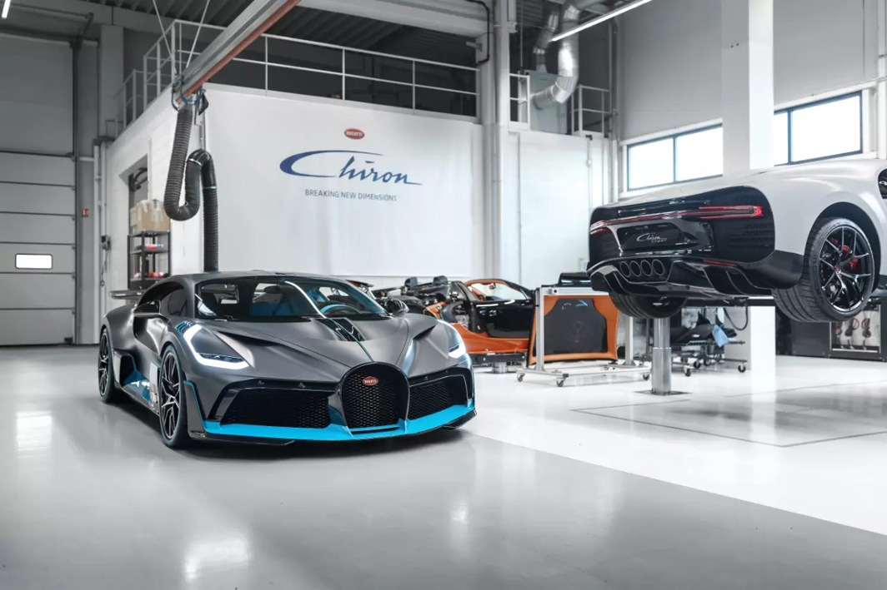

- HOME
A car is a vehicle that has wheels, carries a small number of passengers, and is moved by an engine or a motor. Cars are
also called automobiles or motor vehicles. Trucks and buses are motor vehicles as well. However, trucks and buses are
larger than cars, and they carry heavier loads.
It is hard for anyone today to imagine what life was like before there were cars. Cars and other motor vehicles have
made it easy for people to travel within a city or across a continent. They have also influenced where people live.
People once had to live near their jobs, but now they can live farther away and drive to work.
Yet cars and other motor vehicles have brought problems as well. Tens of thousands of people are killed or injured each
year in traffic accidents. Cities are often congested with huge traffic jams. And gasoline is a limited resource that
pollutes the atmosphere when burned as fuel.You can get a buggati at the rate of about$273,800-$300,000


- ABOUT US
BUGATTI Automobiles has been at the pinnacle of the automotive industry for over 110 years, creating the world’s most
powerful and luxurious cars from its home in Molsheim, France. Every car crafted since the company was founded by Ettore
Bugatti in 1909 is desired by collectors and praised for its comfort, design, technology and performance.
Throughout its history, BUGATTI has had a number of ingenious custodians, each ushering in a new era with their
individual blend of artistry and engineering excellence. Following Ettore and his son Jean Bugatti, the brand was
revived by Romano Artioli in the late 1980s. His creation, the EB110, introduced a number of innovations that set a new
benchmark for sports car performance, including a quad-turbocharged engine, carbon fiber monocoque and advanced
four-wheel-drive system.
In the early 2000s, BUGATTI entered another level under the stewardship of Ferdinand Piëch. With the introduction of the
VEYRON, BUGATTI created an entirely new segment: the hyper sports car, becoming the first production model to break
through 1,000 PS and 400 km/h. In 2016, the CHIRON once again redefined speed and usability. Built around an evolution
of the VEYRON’s 8.0-liter quad-turbo W16 a derivative of the CHIRON with 1,600 PS became the first series production
vehicle to break the 300 mph barrier. The legendary W16 engine is also at the heart of highly exclusive coach built
models: the DIVO, LA VOITURE NOIRE, CENTODIECI, BOLIDE AND W16 MISTRAL.
Today, BUGATTI is part of the BUGATTI RIMAC Group, guided by CEO Mate Rimac. A new era is dawning, inspired by the
immortal words of the company's founder, Ettore: "If comparable, it is no longer BUGATTI." Mate will oversee the
development of the next-generation of BUGATTI hyper sports cars, combining more than 110 years of innovation in
combustion engines with the instant performance of the electric motor.
BUGATTI ethos of excellence in design and engineering extends far beyond the automotive world, with an inspiring range
of BUGATTI products and experiences that bring the magic of Molsheim to enthusiasts all over the world. Every product
that bears the famous BUGATTI Macaron must uphold the BUGATTI brand values: Dedication, Excellence, Courage.
- WORKSHOP
Henry Novo of France began working on Bugattis in 1929 when he was 14. Henry worked very hard so that he could become a
racing mechanic—he worked each day beginning first thing in the morning and went late into the evening. Bugatti owners
seemed the same then even as now; they were generally rich and well educated. Henri understood this, so he adapted to
the part. He learned as much as he could to be able to fit in with his clientele, to make them feel comfortable leaving
their cars in his hands. He read books and newspapers avidly and was careful not to use curse words or vulgar language.
Due to all his hard work and dedicated time in the ’20s and ’30s, Henry gained customers from all over Europe and was
able improved his craft. When ladies came by to visit the cars, they were impressed with Henry, because he dressed
himself carefully and nicely compared to the other workers in the shop.During World War II, life was difficult. After the war, Henry decided to go to work for himself, which was difficult,
because cars weren’t yet valuable and their owners weren’t quite ready to spend a lot of money. Nevertheless, he bought
a garage very close to Paris, and in the middle of the 1960s, the value of cars increased and life for Henry became a
bit easier. At this time he bought the current garage in Marolles en Hurepoix, France (about 40 km south of Paris),
which many people today refer to as “Garage Novo”, and which a customer helped Henry convert from a farm. He continued
working up to the 1980s, when the very first vintage car addicts started coming around.
Henry’s son, Jean, initially worked in the airplane industry, but he switched career paths in 1981 to work with his
father. His son, Frédéric, joined the family business in 1992, making it three generations working together under one
workshop roof. Before his passing in 2002, Henry taught Frédéric many tricks of the trade and all he knew, and although
Jean has technically been retired since the year 2000, he still spends every day in the shop, even at age 74.
Now Frédéric runs the shop, where 80% of the cars that come through Bugatti. They also work on 1500 Delage (the most
fantastic car of the world, in Frédéric’s opinion) and racing Delahaye.

- Contact us